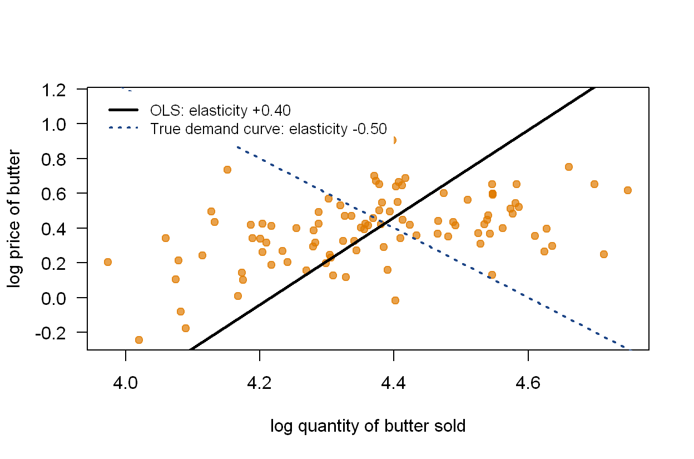
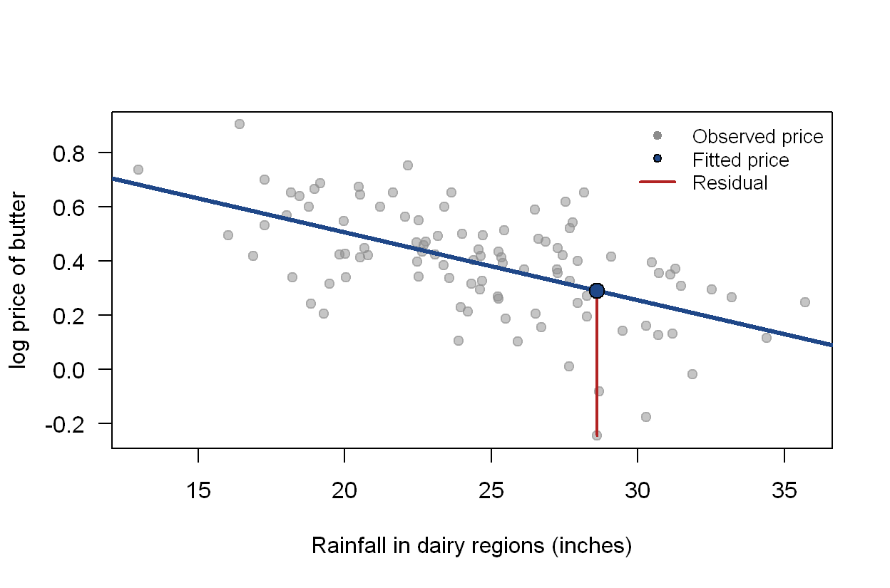
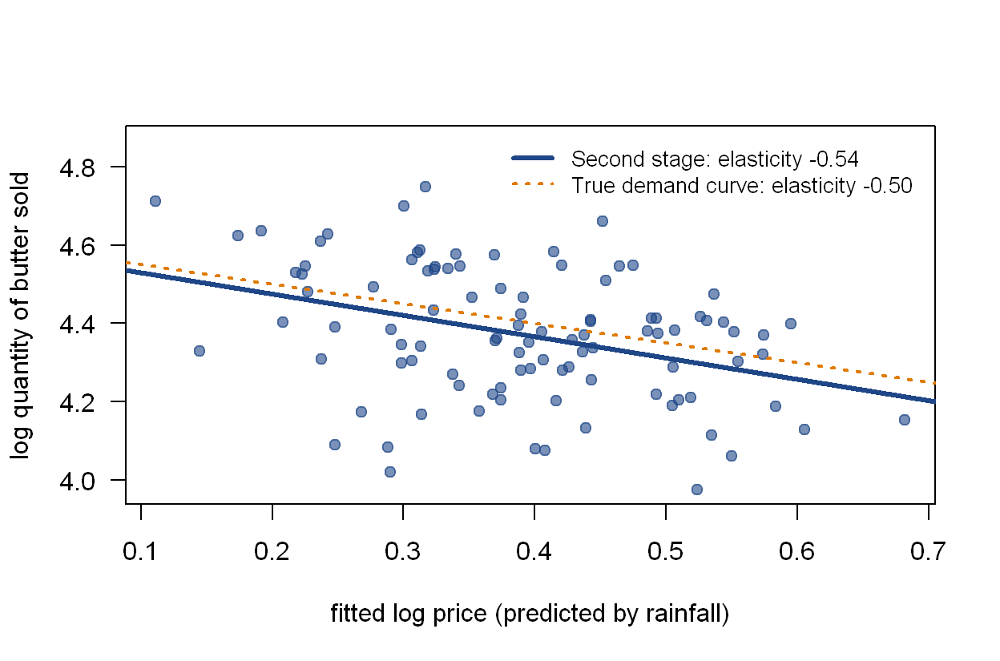
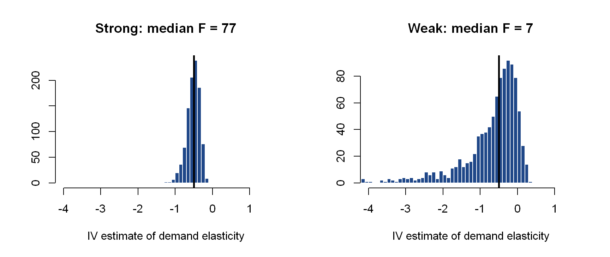

rm(list = ls())
packages <- c(
"AER", # ivreg(), CigarettesSW, robust standard errors
"wooldridge", # card dataset (Card 1995)
"MASS", # mvrnorm() for the correlation-matrix simulation
"modelsummary", # Regression tables
"knitr" # kable() tables
)
missing <- packages[!packages %in% rownames(installed.packages())]
if (length(missing) > 0) install.packages(missing)
invisible(lapply(packages, library, character.only = TRUE))
col_blue <- "#1F4788"
col_orange <- "#E07B00"
col_grey <- "grey55"Endogeneity and Instrumental Variables
Companion Notebook
ECONGA-1001.001: Applied Statistics and Econometrics I
New York University
What This Notebook Covers
When a regressor is correlated with the error term, OLS is biased and inconsistent. Instrumental variables (IV) fix this by estimating the effect of the endogenous regressor using only the variation generated by an exogenous instrument. Every section below is a version of that idea.
- Why OLS fails: a simulated butter market
- The first stage: separating rainfall-driven price variation
- The second stage and two-stage least squares (2SLS)
- The IV estimator: covariances and the reduced form
- Instrument validity: relevance, exogeneity, exclusion, and proxies
- Identification: order and rank conditions
- Inference and diagnostics: standard errors, weak instruments, Wu–Hausman, Sargan
- Applications: cigarette demand and distance to college
We use two kinds of data. Simulated data, where we know the true data generating process (DGP), let us check every estimator against the truth: in the butter market the true demand elasticity is −0.5. Real data (Stock and Watson’s cigarette data and Card’s college-proximity data) show what the same tools look like in practice.
1 Setup
2 Part 1. Why OLS Fails
2.1 A simulated butter market
Price and quantity are determined by two equations (in logs):
\[\text{Demand:} \quad \log Q_t = 4.6 - 0.5 \log P_t + 0.4\, M_t + \varepsilon^d_t\] \[\text{Supply:} \quad \log Q_t = 3.0 + 1.0 \log P_t + 0.04\,(R_t - 25) - 0.3\, F_t + \varepsilon^s_t\]
- \(R_t\): rainfall in dairy-producing regions (inches) - our hypothetical instrument; it shifts supply only
- \(F_t\): cattle-feed cost - another supply shifter
- \(M_t\): price of margarine - a substitute, so it shifts demand
- \(\varepsilon^d_t, \varepsilon^s_t\): demand and supply shocks, unobserved in practice
The true demand elasticity is −0.5 and the true supply elasticity is +1.0. Setting demand equal to supply and solving gives the equilibrium price, which is how the function below generates the data.
make_butter <- function(n = 100, rain_eff = 0.04, seed = 1928) {
if (!is.null(seed)) set.seed(seed)
rain <- rnorm(n, 25, 5) # inches of rain in dairy regions (instrument)
feed <- rnorm(n, 0, 0.2) # log cattle-feed cost (supply shifter)
marg <- rnorm(n, 0, 0.2) # log margarine price (demand shifter)
ud <- rnorm(n, 0, 0.20) # demand shocks
us <- rnorm(n, 0, 0.05) # supply shocks
logP <- (0.6 - rain_eff * (rain - 25) + 0.4 * marg + 0.3 * feed + ud - us) / 1.5 # equilibrium
logQ <- 4.6 - 0.5 * logP + 0.4 * marg + ud
data.frame(year = 1:n, rain, feed, marg, logP, logQ, ud)
}
butter <- make_butter()
head(round(butter, 3))The column ud holds the demand shocks. In real data you never see it; we keep it only so we can check what the estimators are doing.
2.2 OLS gets the wrong sign
ols <- lm(logQ ~ logP, data = butter)
coef(summary(ols)) Estimate Std. Error t value Pr(>|t|)
(Intercept) 4.2166385 0.03278490 128.615274 4.367001e-111
logP 0.3978847 0.07486293 5.314843 6.707021e-07OLS estimates the demand elasticity as 0.40 - positive, when the truth is −0.5.
# Market diagrams put quantity on the x-axis and price on the y-axis.
# A fitted line logQ = a + b logP therefore has slope 1/b in this picture.
plot(butter$logQ, butter$logP, pch = 19, col = adjustcolor(col_orange, 0.7), las = 1,
xlab = "log quantity of butter sold", ylab = "log price of butter",
ylim = range(butter$logP) + c(0, 0.25))
abline(a = -coef(ols)[1] / coef(ols)[2], b = 1 / coef(ols)[2], lwd = 2.5)
abline(a = 4.6 / 0.5, b = -1 / 0.5, lty = 3, lwd = 2, col = col_blue)
legend("topleft", bg = "white", box.col = NA, inset = 0.015, cex = 0.85, lty = c(1, 3), lwd = c(2.5, 2), col = c("black", col_blue),
c(sprintf("OLS: elasticity %+.2f", coef(ols)[2]), "True demand curve: elasticity -0.50"))
2.4 More data does not help
OLS is inconsistent: as \(n\) grows it converges to the wrong number.
sizes <- c(100, 1000, 10000, 100000)
ols_by_n <- sapply(sizes, function(n) coef(lm(logQ ~ logP, data = make_butter(n = n, seed = 1)))[2])
knitr::kable(data.frame(n = formatC(sizes, format = "d", big.mark = ","), `OLS estimate` = round(ols_by_n, 3),
check.names = FALSE), align = "rr")| n | OLS estimate |
|---|---|
| 100 | 0.321 |
| 1,000 | 0.267 |
| 10,000 | 0.242 |
| 100,000 | 0.248 |
With 100,000 years of data OLS is very precise - around 0.25 - and still nowhere near −0.5.
2.5 Measurement error attenuates OLS
The same logic applies to the other sources of endogeneity. With measurement error in \(x\), part of the variation in the measured regressor is noise that \(y\) doesn’t respond to:
set.seed(5)
n <- 10000
x_true <- rnorm(n) # Var(x*) = 1
x_obs <- x_true + rnorm(n, 0, 1) # measurement error, sigma_u^2 = 1
y <- 2 * x_true + rnorm(n)
c(`slope on true x` = unname(coef(lm(y ~ x_true))[2]),
`slope on measured x` = unname(coef(lm(y ~ x_obs))[2]),
`theory: 2 x 1/(1+1)` = 1) slope on true x slope on measured x theory: 2 x 1/(1+1)
2.018523 1.018805 1.000000 Omitted variables get their own simulation in Part 5.
3 Part 2. The First Stage
3.1 The idea
Butter prices move for two kinds of reasons: demand shocks (which contaminate OLS) and supply shifts caused by rainfall (which don’t). IV uses only the rainfall-driven part. The first stage finds it.
3.2 Regress price on rainfall
\[\log P_t = \pi_0 + \pi_1 R_t + v_t\]
fs <- lm(logP ~ rain, data = butter)
summary(fs)
Call:
lm(formula = logP ~ rain, data = butter)
Residuals:
Min 1Q Median 3Q Max
-0.53511 -0.09603 0.02146 0.11924 0.35059
Coefficients:
Estimate Std. Error t value Pr(>|t|)
(Intercept) 1.007118 0.091551 11.001 < 2e-16 ***
rain -0.025074 0.003658 -6.854 6.43e-10 ***
---
Signif. codes: 0 '***' 0.001 '**' 0.01 '*' 0.05 '.' 0.1 ' ' 1
Residual standard error: 0.1655 on 98 degrees of freedom
Multiple R-squared: 0.324, Adjusted R-squared: 0.3171
F-statistic: 46.97 on 1 and 98 DF, p-value: 6.43e-10One more inch of rain lowers the price of butter by about 2.5% (\(\hat{\pi}_1 = -0.0251\)). Rainfall explains 32% of the variation in price, and the first-stage F-statistic is 47.
Relevance check by hand. With one instrument, the first-stage F compares the model with rainfall to a model with only an intercept:
anova(lm(logP ~ 1, data = butter), fs)The F here is the same 47 reported by summary(), and it equals the squared t-statistic on rainfall (46.97).
3.3 Fitted prices and residuals
The first stage splits every observed price into a part predicted by rainfall and a residual:
\[\log P_t = \underbrace{\hat{\pi}_0 + \hat{\pi}_1 R_t}_{\widehat{\log P}_t} + \hat{v}_t\]
butter$Phat <- fitted(fs)
butter$vhat <- resid(fs)
plot(butter$rain, butter$logP, pch = 19, col = adjustcolor(col_grey, 0.5), las = 1,
xlab = "Rainfall in dairy regions (inches)", ylab = "log price of butter")
abline(fs, lwd = 3, col = col_blue)
k <- which.max(abs(butter$vhat)) # highlight one year's decomposition
segments(butter$rain[k], butter$Phat[k], butter$rain[k], butter$logP[k], col = "firebrick", lwd = 2)
points(butter$rain[k], butter$Phat[k], pch = 21, bg = col_blue, cex = 1.5)
legend("topright", bty = "n", cex = 0.85, c("Observed price", "Fitted price", "Residual"),
pch = c(19, 21, NA), pt.bg = c(NA, col_blue, NA), lty = c(NA, NA, 1), lwd = c(NA, NA, 2),
col = c(col_grey, "black", "firebrick"))
Because OLS residuals are uncorrelated with the fitted values, the variance splits exactly:
c(`Var(log P)` = var(butter$logP),
`Var(fitted) + Var(residual)` = var(butter$Phat) + var(butter$vhat)) Var(log P) Var(fitted) + Var(residual)
0.04009568 0.04009568 3.4 What the fitted prices capture
The fitted price is built from rainfall alone. If rainfall is unrelated to demand shocks, so is the fitted price - and the demand shocks end up in the residual. In the simulation we can check this directly:
knitr::kable(data.frame(
Component = c("Observed price", "Fitted price (rainfall-driven)", "First-stage residual"),
`Correlation with demand shock` = round(c(cor(butter$logP, butter$ud),
cor(butter$Phat, butter$ud),
cor(butter$vhat, butter$ud)), 2),
check.names = FALSE))| Component | Correlation with demand shock |
|---|---|
| Observed price | 0.72 |
| Fitted price (rainfall-driven) | -0.04 |
| First-stage residual | 0.91 |
4 Part 3. The Second Stage and 2SLS
4.1 Regress quantity on the fitted prices
\[\log Q_t = \alpha_0 + \alpha_1 \widehat{\log P}_t + e_t\]
ss <- lm(logQ ~ Phat, data = butter)
coef(ss)(Intercept) Phat
4.5838229 -0.5436446 # A regression plot: fitted price on the x-axis, so the slope is the elasticity itself.
plot(butter$Phat, butter$logQ, pch = 19, col = adjustcolor(col_blue, 0.6), las = 1,
xlab = "fitted log price (predicted by rainfall)", ylab = "log quantity of butter sold",
ylim = range(butter$logQ) + c(0, 0.12))
abline(ss, lwd = 3, col = col_blue)
abline(a = 4.6, b = -0.5, lty = 3, lwd = 2, col = col_orange)
legend("topright", bg = "white", box.col = NA, inset = 0.015, cex = 0.85, lty = c(1, 3), lwd = c(3, 2), col = c(col_blue, col_orange),
c(sprintf("Second stage: elasticity %.2f", coef(ss)[2]), "True demand curve: elasticity -0.50"))
Using only the rainfall-driven price variation, the estimate is -0.54, close to the true −0.5. OLS gave 0.40.
4.2 2SLS in one step with ivreg()
In ivreg(), the formula left of | is the equation we care about; the right side lists the instruments (and, in general, all exogenous regressors).
iv <- ivreg(logQ ~ logP | rain, data = butter)
modelsummary(list("OLS" = ols, "2SLS by hand (stage 2)" = ss, "2SLS (ivreg)" = iv),
coef_map = c("logP" = "log price", "Phat" = "log price"),
gof_map = c("nobs"), fmt = 3,
title = "Demand for butter: true elasticity = -0.5")| OLS | 2SLS by hand (stage 2) | 2SLS (ivreg) | |
|---|---|---|---|
| log price | 0.398 | -0.544 | -0.544 |
| (0.075) | (0.139) | (0.213) | |
| Num.Obs. | 100 | 100 | 100 |
The hand-run second stage and ivreg() give the same coefficient but different standard errors. Only the ivreg() standard error is correct.
4.3 Why the hand-run standard error is wrong
The second-stage error is \(e_t = \varepsilon_t + \alpha_1(\log P_t - \widehat{\log P}_t)\), not the structural error. So stage 2 estimates \(\sigma^2\) from the wrong residuals. The correct variance uses residuals built from the actual price:
\[\widehat{\text{Var}}(\hat{\boldsymbol\beta}_{2SLS}) = \hat\sigma^2 (\hat{\mathbf X}'\hat{\mathbf X})^{-1}, \qquad \hat\sigma^2 = \frac{1}{n-k}\sum_t \big(\log Q_t - \hat\alpha_0 - \hat\alpha_1 \log P_t\big)^2\]
(note \(\hat{\mathbf X}'\hat{\mathbf X} = \mathbf X'\mathbf P_Z\mathbf X\)). We can rebuild the correct SE by swapping in the right residuals:
b <- coef(ss)
res_wrong <- butter$logQ - (b[1] + b[2] * butter$Phat) # what stage 2 uses
res_right <- butter$logQ - (b[1] + b[2] * butter$logP) # what 2SLS should use
se_stage2 <- coef(summary(ss))["Phat", "Std. Error"]
se_fixed <- se_stage2 * sqrt(sum(res_right^2) / sum(res_wrong^2))
c(`stage-2 SE` = se_stage2, `rebuilt SE` = se_fixed,
`ivreg SE` = coef(summary(iv))["logP", "Std. Error"])stage-2 SE rebuilt SE ivreg SE
0.1388048 0.2126368 0.2126368 Here the hand-run SE is too small, so you would be overconfident. In Part 5’s simulation it turns out too large: it is not reliably conservative.
5 Part 4. The IV Estimator
5.1 One number, three formulas
With one instrument, 2SLS reduces to a ratio of sample covariances, which is also the ratio of the reduced-form and first-stage slopes:
\[\hat{\beta}_1^{2SLS} = \frac{s_{YZ}}{s_{XZ}} = \frac{\hat{\gamma}_1}{\hat{\pi}_1} = \frac{\text{reduced form } (Y \text{ on } Z)}{\text{first stage } (X \text{ on } Z)}\]
rf <- lm(logQ ~ rain, data = butter) # reduced form
gam1 <- coef(rf)[["rain"]]
c(`cov(Y,Z) / cov(X,Z)` = cov(butter$logQ, butter$rain) / cov(butter$logP, butter$rain),
`reduced form / first stage` = gam1 / pi1,
`ivreg` = unname(coef(iv)[2])) cov(Y,Z) / cov(X,Z) reduced form / first stage
-0.5436446 -0.5436446
ivreg
-0.5436446 The reduced form says one more inch of rain raises quantity sold by 1.36%; the first stage says it lowers the price by 2.51%. Their ratio, 0.0136 / (-0.0251) = -0.54, is the elasticity.
5.2 Consistency: what the formula needs
Substituting the true model gives, in any sample,
\[\hat{\beta}_1^{IV} - \beta_1 = \frac{\widehat{\text{Cov}}(Z, u)}{\widehat{\text{Cov}}(Z, X)}\]
where \(u\) is the structural error. Again we can check this because we know \(u\):
c(`cov(Z,u) / cov(Z,X)` = cov(butter$rain, u) / cov(butter$rain, butter$logP),
`IV - truth` = unname(coef(iv)[2]) + 0.5)cov(Z,u) / cov(Z,X) IV - truth
-0.04364464 -0.04364464 The numerator is small because rainfall really is unrelated to the demand error (exogeneity); the denominator is far from zero because rainfall really moves the price (relevance). In large samples the numerator goes to zero, so IV is consistent - which OLS was not.
6 Part 5. Instrument Validity
6.1 Three candidate instruments for butter demand
| Candidate | Shifts | Valid for demand? |
|---|---|---|
| Rainfall | supply | Yes |
| Cattle-feed cost | supply | Yes (if strong enough) |
| Margarine price | demand (a substitute) | No - exclusion fails |
cand <- list(rain = ivreg(logQ ~ logP | rain, data = butter),
feed = ivreg(logQ ~ logP | feed, data = butter),
marg = ivreg(logQ ~ logP | marg, data = butter))
fsF <- sapply(c("rain", "feed", "marg"), function(z)
summary(lm(as.formula(paste("logP ~", z)), data = butter))$fstatistic[["value"]])
knitr::kable(data.frame(Instrument = c("Rainfall", "Cattle-feed cost", "Margarine price"),
`First-stage F` = round(fsF, 1),
`IV estimate` = round(sapply(cand, function(m) coef(m)[2]), 2),
check.names = FALSE, row.names = NULL))| Instrument | First-stage F | IV estimate |
|---|---|---|
| Rainfall | 47.0 | -0.54 |
| Cattle-feed cost | 1.7 | -0.56 |
| Margarine price | 18.6 | 1.00 |
- Feed cost is valid but much weaker than rainfall in this sample (F = 1.7), so its estimate is imprecise. Validity and strength are different properties.
- Margarine is relevant (F = 18.6) but invalid. Its estimate, 1.00, is close to the supply elasticity (+1.0): a demand shifter traces out the supply curve.
6.2 Strong correlation is not validity: a correlation-matrix simulation
This simulation (adapted from the course notebook) has an omitted variable \(c\). Each IV assumption is one cell of the correlation matrix.
make_ovb <- function(rxc = 0.6, rxz = 0.6, rzc = 0, empirical = TRUE, n = 500, seed = 1234) {
# x c z e
rho <- matrix(c(1.0, rxc, rxz, 0.0, # x - regressor
rxc, 1.0, rzc, 0.0, # c - omitted variable
rxz, rzc, 1.0, 0.0, # z - instrument
0.0, 0.0, 0.0, 1.0), # e - disturbance
byrow = TRUE, nrow = 4)
sd <- c(1, 1, 1, 2)
Sigma <- diag(sd) %*% rho %*% diag(sd) # covariance matrix
set.seed(seed)
df <- data.frame(mvrnorm(n = n, mu = c(0, 0, 1, 0), Sigma = Sigma, empirical = empirical))
colnames(df) <- c("x", "c", "z", "e")
df$y <- 0 + 2 * df$x + 3 * df$c + df$e # true effect of x = 2; c will be omitted
df
}
df <- make_ovb()
modelsummary(list("True model" = lm(y ~ x + c, data = df),
"c omitted (OLS)" = lm(y ~ x, data = df),
"IV with z" = ivreg(y ~ x | z, data = df)),
coef_map = c("x" = "x", "c" = "c"), gof_map = c("nobs"), fmt = 3)| True model | c omitted (OLS) | IV with z | |
|---|---|---|---|
| x | 2.000 | 3.800 | 2.000 |
| (0.112) | (0.140) | (0.269) | |
| c | 3.000 | ||
| (0.112) | |||
| Num.Obs. | 500 | 500 | 500 |
empirical = TRUE makes the sample correlations equal the matrix exactly, so the bias formulas hold to the decimal: OLS bias \(= 3 \times \text{Cov}(x, c)/\text{Var}(x) = 3 \times 0.6 = 1.8\).
Now edit one cell at a time:
ovb_fit <- function(df) c(`First-stage F` = summary(lm(x ~ z, data = df))$fstatistic[["value"]],
OLS = coef(lm(y ~ x, data = df))[["x"]],
IV = coef(ivreg(y ~ x | z, data = df))[["x"]])
versions <- rbind(
`Valid` = ovb_fit(make_ovb()),
`Invalid: Corr(z, c) 0 -> 0.3` = ovb_fit(make_ovb(rzc = 0.3)),
`Weak: Corr(x, z) 0.6 -> 0.1 (empirical = F)` = ovb_fit(make_ovb(rxz = 0.1, empirical = FALSE)))
knitr::kable(round(versions, 2))| First-stage F | OLS | IV | |
|---|---|---|---|
| Valid | 280.12 | 3.80 | 2.00 |
| Invalid: Corr(z, c) 0 -> 0.3 | 280.12 | 3.80 | 3.50 |
| Weak: Corr(x, z) 0.6 -> 0.1 (empirical = F) | 2.32 | 3.79 | 4.39 |
- Invalid: the first stage is just as strong (F = 280), but IV is off by exactly \(\text{Cov}(z, \text{error})/\text{Cov}(z, x) = 3 \times 0.3 / 0.6 = 1.5\). No strength statistic can detect this.
- Weak: with sampling noise switched back on (
empirical = FALSE), a weak first stage (F = 2) gives 4.39. Withempirical = TRUEthis row would show exactly 2 - forcing the sample correlations removes the very noise that makes weak instruments dangerous.
The standard-error contrast from Part 3 goes the other way here:
c(`stage-2 SE` = coef(summary(lm(y ~ fitted(lm(x ~ z, data = df)), data = df)))[2, 2],
`ivreg SE` = coef(summary(ivreg(y ~ x | z, data = df)))[2, 2])stage-2 SE ivreg SE
0.3563036 0.2692810 6.3 Proxy variable vs instrument
A proxy is a noisy measurement of the omitted variable; it goes into the regression and should be as correlated with \(c\) as possible. An instrument stays out of the regression and must be uncorrelated with \(c\). A noisy proxy is a measurement-error problem: it removes only part of the bias.
set.seed(99); df$q_good <- df$c + rnorm(nrow(df), 0, 0.5)
set.seed(99); df$q_noisy <- df$c + rnorm(nrow(df), 0, 1)
proxy_tab <- c(
`OLS, c omitted` = coef(lm(y ~ x, data = df))[["x"]],
`OLS with c (infeasible)` = coef(lm(y ~ x + c, data = df))[["x"]],
`OLS + good proxy` = coef(lm(y ~ x + q_good, data = df))[["x"]],
`OLS + noisier proxy` = coef(lm(y ~ x + q_noisy, data = df))[["x"]],
`IV with z` = coef(ivreg(y ~ x | z, data = df))[["x"]],
`Wrong job: proxy as instrument` = coef(ivreg(y ~ x | q_good, data = df))[["x"]],
`Wrong job: instrument as control` = coef(lm(y ~ x + z, data = df))[["x"]])
knitr::kable(data.frame(Estimate = round(proxy_tab, 2)))| Estimate | |
|---|---|
| OLS, c omitted | 3.80 |
| OLS with c (infeasible) | 2.00 |
| OLS + good proxy | 2.52 |
| OLS + noisier proxy | 3.08 |
| IV with z | 2.00 |
| Wrong job: proxy as instrument | 6.90 |
| Wrong job: instrument as control | 4.81 |
The good proxy has \(\text{Corr}(q, c) = 0.90\), the noisier one 0.72. Swapping the roles makes both worse than plain OLS: the proxy is correlated with \(c\), which is in the error, so it is an invalid instrument.
7 Part 6. Identification - Order and Rank Conditions
Order condition: at least as many excluded instruments as endogenous regressors (\(m \ge k\)). Rank condition: the instruments must move the endogenous regressors in linearly independent ways.
To see the difference, make the price of margarine endogenous - say a common taste shock for spreads moves both butter demand and margarine prices - and put it in the butter demand equation as a second endogenous regressor. Margarine prices are driven by vegetable-oil costs.
make_butter2 <- function(n = 1000, seed = 1928) {
set.seed(seed)
rain <- rnorm(n, 25, 5); feed <- rnorm(n, 0, 0.2); veg <- rnorm(n, 0, 0.2) # veg: vegetable-oil cost
ud <- rnorm(n, 0, 0.2); us <- rnorm(n, 0, 0.05)
logPm <- 0.8 * veg + 0.5 * ud + rnorm(n, 0, 0.05) # margarine price: endogenous (shares ud)
logP <- (0.6 - 0.04 * (rain - 25) + 0.4 * logPm + 0.3 * feed + ud - us) / 1.5
logQ <- 4.6 - 0.5 * logP + 0.4 * logPm + ud # true: -0.5 own price, +0.4 margarine price
data.frame(rain, feed, veg, logPm, logP, logQ)
}
b2 <- make_butter2()With rainfall and feed cost as instruments, \(m = k = 2\): the order condition holds. But both are dairy supply shifters, so neither moves the margarine price:
summary(lm(logPm ~ rain + feed, data = b2))$fstatistic value numdf dendf
0.3944414 2.0000000 997.0000000 The rank condition fails. Adding a margarine supply shifter (vegetable-oil cost) restores it:
fail <- ivreg(logQ ~ logP + logPm | rain + feed, data = b2)
ok <- ivreg(logQ ~ logP + logPm | rain + feed + veg, data = b2)
modelsummary(list("Instruments: rain, feed" = fail, "Instruments: rain, feed, veg. oil" = ok),
coef_map = c("logP" = "log butter price (truth -0.5)", "logPm" = "log margarine price (truth +0.4)"),
gof_map = c("nobs"), fmt = 3)| Instruments: rain, feed | Instruments: rain, feed, veg. oil | |
|---|---|---|
| log butter price (truth -0.5) | -0.511 | -0.506 |
| (0.091) | (0.044) | |
| log margarine price (truth +0.4) | 0.306 | 0.455 |
| (2.249) | (0.039) | |
| Num.Obs. | 1000 | 1000 |
Under rank failure the margarine coefficient is not pinned down - it changes wildly from sample to sample:
seeds <- c(1, 2, 3, 7, 1928)
knitr::kable(t(sapply(seeds, function(s) {
d <- make_butter2(seed = s)
c(seed = s,
`margarine coef. (rain, feed)` = round(coef(ivreg(logQ ~ logP + logPm | rain + feed, data = d))[["logPm"]], 2),
`margarine coef. (+ veg. oil)` = round(coef(ivreg(logQ ~ logP + logPm | rain + feed + veg, data = d))[["logPm"]], 2))
})))| seed | margarine coef. (rain, feed) | margarine coef. (+ veg. oil) |
|---|---|---|
| 1 | 0.90 | 0.42 |
| 2 | 43.78 | 0.42 |
| 3 | 0.31 | 0.45 |
| 7 | 4.77 | 0.47 |
| 1928 | 0.31 | 0.45 |
8 Part 7. Inference and Diagnostics
8.1 Robust standard errors
ivreg() gives the correct 2SLS standard errors. As with OLS, heteroskedasticity-robust SEs are a sensible default:
coeftest(iv, vcov = sandwich)
t test of coefficients:
Estimate Std. Error t value Pr(>|t|)
(Intercept) 4.583823 0.087154 52.5948 < 2.2e-16 ***
logP -0.543645 0.202658 -2.6826 0.008576 **
---
Signif. codes: 0 '***' 0.001 '**' 0.01 '*' 0.05 '.' 0.1 ' ' 18.2 Weak instruments
When the instrument barely moves \(X\), the IV estimator divides by a small, noisy number. We simulate the butter market 1,000 times with the rainfall effect we have used so far, and again with an effect less than a third as large:
sim_once <- function(eff) {
d <- make_butter(rain_eff = eff, seed = NULL)
c(iv = cov(d$logQ, d$rain) / cov(d$logP, d$rain),
F = summary(lm(logP ~ rain, data = d))$fstatistic[["value"]])
}
set.seed(42)
strong <- replicate(1000, sim_once(0.040))
weak <- replicate(1000, sim_once(0.012))
summ <- function(r) c(`median F` = median(r["F", ]), `share F > 10` = mean(r["F", ] > 10),
`5th pct` = unname(quantile(r["iv", ], 0.05)), median = median(r["iv", ]),
`95th pct` = unname(quantile(r["iv", ], 0.95)), `share wrong sign` = mean(r["iv", ] > 0))
knitr::kable(round(rbind(Strong = summ(strong), Weak = summ(weak)), 2))| median F | share F > 10 | 5th pct | median | 95th pct | share wrong sign | |
|---|---|---|---|---|---|---|
| Strong | 76.53 | 1.0 | -0.83 | -0.50 | -0.27 | 0.0 |
| Weak | 6.99 | 0.3 | -2.73 | -0.46 | 0.08 | 0.1 |
par(mfrow = c(1, 2))
for (k in 1:2) {
r <- list(strong, weak)[[k]]
est <- r["iv", ][abs(r["iv", ]) < 500]
hist(est, breaks = seq(-500, 500, by = 0.1), xlim = c(-4, 1.5), col = col_blue, border = "white",
main = sprintf("%s: median F = %.0f", c("Strong", "Weak")[k], median(r["F", ])),
xlab = "IV estimate of demand elasticity", ylab = "")
abline(v = -0.5, lwd = 2.5)
}
The rule of thumb is a first-stage F above 10. It is a conventional heuristic, not a theorem: an F just above 10 still deserves caution.
8.3 Is OLS actually biased? Wu–Hausman via the control function
Add the first-stage residual to the OLS regression. The coefficient on price becomes the 2SLS estimate, and the t-test on the residual is the Wu–Hausman test:
cf <- lm(logQ ~ logP + vhat, data = butter)
coef(summary(cf)) Estimate Std. Error t value Pr(>|t|)
(Intercept) 4.5838229 0.02554435 179.445657 3.729521e-124
logP -0.5436446 0.06289506 -8.643679 1.129972e-13
vhat 1.3928256 0.07649762 18.207436 4.679274e-33c(`control-function coef. on logP` = coef(cf)[["logP"]], `2SLS` = unname(coef(iv)[2]),
`t on vhat, squared` = coef(summary(cf))["vhat", "t value"]^2,
`ivreg Wu-Hausman F` = summary(iv, diagnostics = TRUE)$diagnostics["Wu-Hausman", "statistic"])control-function coef. on logP 2SLS
-0.5436446 -0.5436446
t on vhat, squared ivreg Wu-Hausman F
331.5107422 331.5107422 A large statistic says the “suspicious” part of price matters, so OLS is inconsistent. Failing to reject would not prove exogeneity: the test assumes the instrument is valid and can lack power.
8.4 Overidentification: Sargan by hand
With more instruments than endogenous regressors, regress the 2SLS residuals (built from the actual price) on all the instruments; \(nR^2 \sim \chi^2_{m-k}\) under \(H_0\) that all instruments are valid.
sargan_by_hand <- function(model, instruments) {
e <- residuals(model) # y - X b_2SLS, using actual X
R2 <- summary(lm(as.formula(paste("e ~", instruments)), data = butter))$r.squared
stat <- nobs(model) * R2
c(stat = stat, p = pchisq(stat, df = 1, lower.tail = FALSE))
}
iv_rf <- ivreg(logQ ~ logP | rain + feed, data = butter)
iv_rm <- ivreg(logQ ~ logP | rain + marg, data = butter)
sarg <- rbind(
`Rain + feed (both valid)` = c(estimate = coef(iv_rf)[[2]], sargan_by_hand(iv_rf, "rain + feed"),
ivreg_stat = summary(iv_rf, diagnostics = TRUE)$diagnostics["Sargan", "statistic"]),
`Rain + margarine (one invalid)` = c(estimate = coef(iv_rm)[[2]], sargan_by_hand(iv_rm, "rain + marg"),
ivreg_stat = summary(iv_rm, diagnostics = TRUE)$diagnostics["Sargan", "statistic"]))
knitr::kable(signif(sarg, 3))| estimate | stat | p | ivreg_stat | |
|---|---|---|---|---|
| Rain + feed (both valid) | -0.5450 | 2.57e-04 | 0.987 | 2.57e-04 |
| Rain + margarine (one invalid) | -0.0473 | 3.54e+01 | 0.000 | 3.54e+01 |
The test rejects when one instrument is invalid. But it only checks whether instruments agree: two instruments that are invalid in the same direction can pass, and with exactly one instrument there is nothing to test (ivreg reports NA). Failure to reject does not establish validity.
9 Part 8. Applications
9.1 Cigarette demand (real data)
Same simultaneity problem as butter: 48 U.S. states in 1995, with the general sales tax as the instrument for price.
data("CigarettesSW", package = "AER")
cig <- subset(CigarettesSW, year == "1995")
cig$rprice <- cig$price / cig$cpi # real price per pack
cig$salestax <- (cig$taxs - cig$tax) / cig$cpi # real general sales tax
cig_ols <- lm(log(packs) ~ log(rprice), data = cig)
cig_iv <- ivreg(log(packs) ~ log(rprice) | salestax, data = cig)
modelsummary(list("OLS" = cig_ols, "IV: sales tax" = cig_iv), vcov = "HC0",
coef_map = c("log(rprice)" = "log real price"), gof_map = c("nobs"), fmt = 3,
title = "Cigarette demand, 1995 (robust standard errors)")| OLS | IV: sales tax | |
|---|---|---|
| log real price | -1.213 | -1.084 |
| (0.190) | (0.312) | |
| Num.Obs. | 48 | 48 |
summary(cig_iv, vcov = sandwich, diagnostics = TRUE)$diagnostics df1 df2 statistic p-value
Weak instruments 1 46 42.1410807 5.289018e-08
Wu-Hausman 1 45 0.3059935 5.828871e-01
Sargan 0 NA NA NAA 10% price increase reduces packs smoked by about 11%. The instrument is strong (robust first-stage F = 42), but OLS and IV are close and Wu–Hausman does not reject (p = 0.58). With only 48 states, that is weak evidence that price is exogenous - not proof.
9.2 Distance to college (Card, 1995)
Card uses growing up near a four-year college (nearc4) as an instrument for years of schooling in the NLS Young Men cohort: proximity lowers the cost of college.
The exogeneity concern. Families who live near colleges differ:
data("card", package = "wooldridge")
bal <- aggregate(cbind(smsa66, south66, black, fatheduc, motheduc) ~ nearc4, data = card, FUN = mean)
bal$nearc4 <- c("Not near a 4-year college", "Near a 4-year college")
knitr::kable(bal, digits = 2, col.names = c("", "Urban (1966)", "South (1966)", "Black",
"Father's educ.", "Mother's educ."))| Urban (1966) | South (1966) | Black | Father’s educ. | Mother’s educ. | |
|---|---|---|---|---|---|
| Not near a 4-year college | 0.36 | 0.54 | 0.19 | 9.33 | 10.26 |
| Near a 4-year college | 0.80 | 0.30 | 0.14 | 10.42 | 10.77 |
Men near a college are far more likely to have grown up in a city and outside the South, and their parents have more schooling (among those who report it). So the instrument is plausible only conditional on controls - the exogenous controls \(W\), which appear on both sides of |:
ctrl <- "exper + expersq + black + smsa + south + smsa66 + reg662 + reg663 + reg664 + reg665 + reg666 + reg667 + reg668 + reg669"
card_ols <- lm(as.formula(paste("lwage ~ educ +", ctrl)), data = card)
card_fs <- lm(as.formula(paste("educ ~ nearc4 +", ctrl)), data = card)
card_iv0 <- ivreg(lwage ~ educ | nearc4, data = card)
card_iv <- ivreg(as.formula(paste("lwage ~ educ +", ctrl, "| nearc4 +", ctrl)), data = card)
modelsummary(list("OLS (controls)" = card_ols, "First stage: educ" = card_fs,
"IV, no controls" = card_iv0, "IV (controls)" = card_iv),
coef_map = c("educ" = "years of schooling", "nearc4" = "near a 4-year college"),
gof_map = c("nobs"), fmt = 3,
title = "Return to schooling, NLS Young Men (Card 1995)")| OLS (controls) | First stage: educ | IV, no controls | IV (controls) | |
|---|---|---|---|---|
| years of schooling | 0.075 | 0.188 | 0.132 | |
| (0.003) | (0.026) | (0.055) | ||
| near a 4-year college | 0.320 | |||
| (0.088) | ||||
| Num.Obs. | 3010 | 3010 | 3010 | 3010 |
- First stage: growing up near a college adds 0.32 years of schooling (F = 13.3 - above 10, but not by a wide margin).
- IV vs OLS: with controls, IV gives 0.132 per year of schooling against OLS’s 0.075, with a standard error about 16 times larger.
- Controls matter: without them IV is 0.188 - the urban and regional differences in the balance table were loading onto the instrument.
- Interpretation: the variation comes from men whose schooling responds to proximity. Card reports that these gains are concentrated among men with less-educated parents, one reason IV need not equal the average return.
10 Common Mistakes
- Taking standard errors from a hand-run second stage. The coefficient is right; the residuals are wrong (Part 3). Use
ivreg(). - “My instrument is strongly correlated with X, so it’s valid.” Strength and validity are separate (Part 5: F = 280 and still biased).
- Using a shifter of the wrong curve. Margarine for butter demand estimates supply (Part 5).
- Using a proxy as an instrument, or an instrument as a control (Part 5).
- Counting instruments and stopping. The order condition can hold while the rank condition fails (Part 6).
- Leaving controls off the right of
|. Every exogenous regressor must appear on both sides, orivreg()treats it as endogenous. - Treating F > 10 as a guarantee, or a passed Sargan/Wu–Hausman test as proof. These are heuristics and partial checks (Part 7).
11 Summary and Key Takeaways
- Endogeneity (\(\text{Cov}(X, \varepsilon) \neq 0\)) makes OLS biased and inconsistent. In the butter market, OLS estimated 0.40 against a truth of −0.5, and more data only made it more precise.
- The first stage splits the endogenous regressor into a part driven by the instrument (uncorrelated with the error) and a residual (which carries the endogeneity).
- The second stage regresses \(Y\) on the fitted values; with rainfall it recovers -0.54. Its coefficient is right, but its standard errors are not: use
ivreg(). - The IV estimator is \(s_{YZ}/s_{XZ}\) = reduced form / first stage, and \(\hat\beta^{IV} - \beta = \widehat{\text{Cov}}(Z,u)/\widehat{\text{Cov}}(Z,X)\).
- Relevance is testable; exogeneity and the exclusion restriction are not. A strong instrument can be invalid, and a demand shifter identifies supply.
- A proxy is a noisy measure of the omitted variable and goes into the regression; an instrument stays out and must be unrelated to it.
- The order condition counts instruments; the rank condition is what actually pins down the coefficients.
- Diagnostics - first-stage F > 10 (a heuristic), Wu–Hausman, Sargan/Hansen - are partial checks. None proves an instrument valid.
12 Further Reading
- Greene, W. H. Econometric Analysis. Pearson. The chapter on endogeneity and instrumental variable estimation.
- Wooldridge, J. M. Introductory Econometrics: A Modern Approach. Cengage. The chapter on instrumental variables estimation and two stage least squares (the source of the
carddata). - Stock, J. H., & Watson, M. W. Introduction to Econometrics. Pearson. The chapter on instrumental variables regression (the cigarette example).
- Card, D. (1995). Using Geographic Variation in College Proximity to Estimate the Return to Schooling. In Aspects of Labour Market Behaviour: Essays in Honour of John Vanderkamp. University of Toronto Press. NBER working paper
- Stock, J. H., & Trebbi, F. (2003). Who Invented Instrumental Variable Regression? Journal of Economic Perspectives, 17(3), 177–194.
- Angrist, J. D., & Pischke, J.-S. (2009). Mostly Harmless Econometrics. Princeton University Press. Chapter 4.
End of Notebook